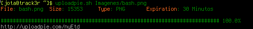
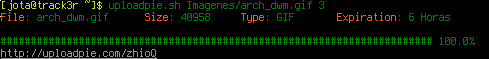

Si por algo soy fanático de los Sistemas Unix, específicamente de GNU/Linux, es por la cantidad inmensa de tools que hay para estos sistemas y en su mayoría herramientas para la linea de comandos de la cual soy un gran fanático. Me gusta usar la linea de comandos en gran medida.
En este post, que sera breve, hablamos de cURL o más bien de uno de los tantos usos que podemos darle y entiéndase que cuando digo cURL me refiero a la tool por linea de comandos no a ninguna de sus librerías para sea cual sea el lenguaje.
Subir archivos por cURL es bastante simple, supongamos que tenemos un website con un formulario POST que tiene un campo para subir una imagen(o cualquier otro archivo), algo así:
<form action="" method="POST" enctype="multipart/form-data"> <input type="file" name="upload"/> <input type="submit" name="send" value="Enviar"/> </form>
Lo que haga el servidor para obtener el archivo o que lenguaje use del lado servidor nos es indiferente. Ya viendo lo de arriba, pueden verse los campos que usa el formulario, básicamente las opciones de cURL que nos importan en este caso es --form o -F, una sintaxis simple que nos permite subir un archivo en este caso seria la siguiente:
curl --form upload=@nombre_archivo --form send="Enviar"
Pueden usarse tantas opciones --form como se quiera, según los campos que tenga el formulario. Nótese que en
la primera opción --form donde esta upload=@nombre_archivo, upload se refiere al nombre que tiene el campo
con el type="file" así que igualmente el nombre podría ser cualquier otro que el programador haya puesto, en ese
caso es solo cambiar ese nombre, el @nombre_archivo pues es el archivo que queremos subir, mas bien la dirección
completa donde se encuentra. En la segunda opción con --form, donde esta send="Enviar", send es otra
variable en el formulario y Enviar es el valor que le damos, esta parte no es muy necesaria ya que de por si
la herramienta cURL hará el submit automáticamente, en todo caso así ponen ellos un ejemplo en el manual, en la practica
no he tenido que hacerlo, no con el campo del submit.
Hay un sitio web que uso bastante para compartir capturas de escritorios y demás, ese website es uploadpie.com, pero me molestaba ya un poco tener que usar el navegador cada vez que quería subir una captura, es que suelo siempre tener varias terminales abiertas, como dije antes yo soy un amante de la linea de comandos se es mucho mas productivo así, el asunto es que decidí hacerme un script sencillo en Bash usando cURL para poder subir las imágenes desde la terminal o tty.
Uplodpie permite subir archivos solo de forma temporal, archivos no mayores de 3 mb, con extensión gif, png, jpg, pdf o txt. De igual forma, se puede seleccionar el tiempo de expiración que queremos para nuestro archivo, que puede ser 30 minutos, una hora, seis horas, un día o una semana.
El campo con el type='file' en el formulario se llama uploadedfile y el campo que permite elegir la duración del archivo en el servidor se llama expire, que en el formulario html es un select con 5 option con valores: 1 = 30 minutos, 2 = 1 horas, 3 = 6 horas, 4 = 1 día y 5 = 1 semana. En el script verán que no tuve que enviar ningún campo del submit, aun así es bueno tenerlo en cuenta, por algo esta en el manual, solo es cuestión de experimentar y buscarle la vuelta si algo no nos sale bien.
#!/bin/bash # Bash script for upload files to uploadpie.com # Licensed under a BSD License # Created by A.J. MAX_FILE_SIZE=3145728 DURATION=1 EXPIRE="30 Minutos" USER_AGENT="Mozilla/5.0 (X11; Linux x86_64; rv:26.0) Gecko/20100101 Firefox/26.0" SCRIPT_NAME=$(basename "$0") if [[ "$#" -lt 1 ]];then echo -e "\tUso: "$SCRIPT_NAME" mi_archivo.ext [DURACION]\n" echo -e "\tDonde DURACION es un numero del 1 al 5 (1 por defecto):\n\t1 = 30 minutos\t2 = 1 Hora\t3 = 6 Horas\t4 = 1 Día\t5 = 1 Semana\n" elif [[ ! -f $1 ]];then echo -e "\tEl archivo $(basename "$1") no es un archivo regular\n" else if [[ "$#" -gt 1 && "$2" =~ ^-?[0-9]+$ ]];then case $2 in 2) DURATION=2 # Duracion del archivo = 1 hora EXPIRE="1 Hora" ;; 3) DURATION=3 # Duracion del archivo = 6 horas EXPIRE="6 Horas" ;; 4) DURATION=4 # Duracion del archivo = 1 dia EXPIRE="1 Día" ;; 5) DURATION=5 # Duracion del archivo = 1 semana EXPIRE="1 Semana" ;; *) # Esto esta aqui solo por convencion ;; esac fi FILE=$1 SIZE=$(stat "${FILE}" | grep -i size | cut -d" " -f4) TYPE=$(echo "${FILE}" | cut -d"." -f2 | tr a-z A-Z) echo -e "\e[1;33mFile\e[0m: $(basename "${FILE}")\t\e[1;33mSize\e[0m: $SIZE\t\e[1;33mType\e[0m: $TYPE\t\e[1;33mExpiration\e[0m: $EXPIRE\n" if [[ "$TYPE" != "PNG" && "$TYPE" != "JPG" && "$TYPE" != "GIF" && "$TYPE" != "PDF" && "$TYPE" != "TXT" ]];then echo -e "El tipo de archivo $TYPE no es soportado por uploadpie.com.\n" elif [[ "$SIZE" -gt "$MAX_FILE_SIZE" ]];then echo -e "El archivo es demasiado grande, uploadpie.com permite un maximo de 3 mb.\n" else curl --progress-bar -A "$USER_AGENT" --form uploadedfile=@"$FILE" --form upload=1 --form MAX_FILE_SIZE="$MAX_FILE_SIZE" --form expire="$DURATION" http://uploadpie.com | grep 'id="uploaded"' | cut -d'"' -f6 fi fi
El script se encuentra en este repositorio, asi que puedes clonar el repositorio a tu ordenador:
git clone https://github.com/aljavier/uploadr-pie.git
Claro, por si eres nuevo usando Linux, recuerda que tienes que darle permisos de ejecución al script:
chmod +x uploadr-pie.sh
Una captua del script sin especificar el tiempo de expiración, solo el archivo: 
Específicando el tiempo de expiración(el 3 equivale a 6 horas como se ve ahí): 
En mi caso, uso un directorio en mi /home/ llamado bin y he agregado ese directorio en mi .bashrc como un nuevo PATH,
simplemente agrega en tu .bashrc esta linea:
export PATH=~/bin:"$PATH"
En algunos distribuciones es posible que ya tengas ese directorio y agregado en tu PATH, algunas distribuciones, según he leído, si creas una carpeta bin/ en tu /home automáticamente lo agregan al PATH, por lo que una vez inicie sesión de nuevo en una terminal podrás ejecutar los scripts o programas en ese directorio como si estuvieran en /usr/bin o similar, sin tener que escribir el directorio completo, solo el nombre del programa. Es muy útil si sueles crear tus propios scripts o programas para usos personales y esas cosas.
Si no tienes cURL recomiendo hacerlo, es una poderosa herramienta que tiene una cantidad inmensa de opciones.
En Arch Linux la instalas con:
pacman -S curl
En Debian/Ubuntu instalas con apt;
apt-get install curl
Tienes mas información sobre cURL en este link o en tu distro GNU/Linux favorita consulta: man curl.
Ha sido todo por ahora, hasta luego y feliz año nuevo!